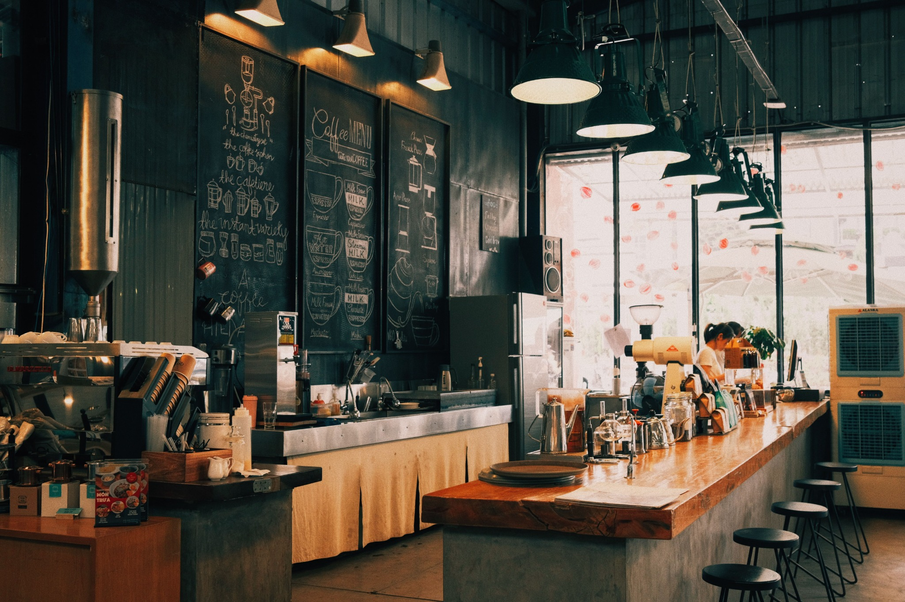

Visit us
Contact Oak & Bean Coffee
Whether you are planning a visit or have a quick question, here is how to reach us.

Contact Details
Address: 18 Willow Street, Johannesburg, Gauteng
Telephone: 011 555 0148
Email: hello@oakandbean.example
Opening Hours
- Monday–Friday07:00–17:30
- Saturday08:00–16:00
- Sunday08:00–16:00
- Public holidays08:00–14:00
Getting Here
The café is located on Willow Street, close to local offices, student accommodation and public transport routes. Limited street parking is available nearby.
Contact us before a larger group visit